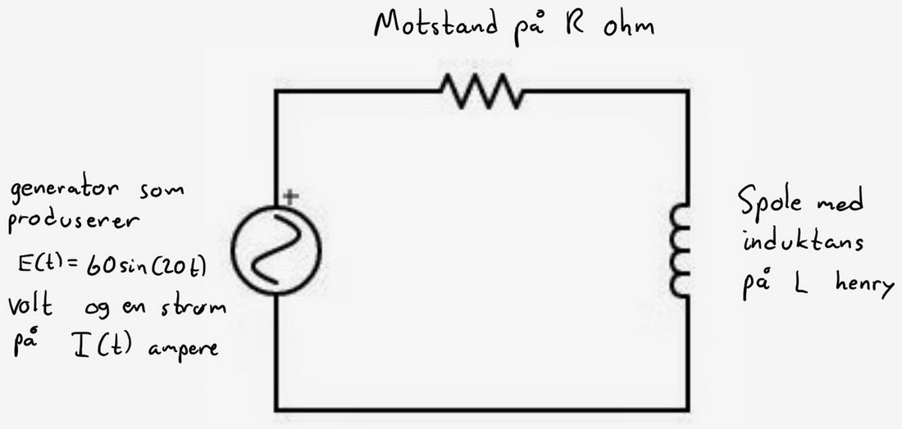

MAT100 for Data
Uke 12
18.03.2015
Alexander
Trykk SPACE for å gå fremover, ESC for oversikt over slides
Sist uke
DifferensialligningerHva er det?
Hva kan de brukes til?
Hvordan løse separable differensialligninger
Eksponensiell vekst
Ideen bak eulers metode for å tilnærme løsninger av diffligninger
Nå
Ligninger for eulers metode
En annen type differensialligninger: andreordens lineære differensialligninger med konstante koeffisienter
Hvordan finne løsningene?
Startverdieproblemer
Lineær algebra: Vektorregning

{kind=link}
- Ohm: Motstanden gir spenningsfall på $RI$
- Spole gir spenningsfall på $L \cdot \frac{dI}{dt}$
- Kirchhoff: Summen av spenningsfall er lik spenning fra generator
Får formel for strømmen $I(t)$:
$$ L \frac{dI}{dt} + RI = 60\sin(20t).$$
Kilde
MAT100
- Bakgrunnsmateriale: Funksjoner, grenser, kontinuitet
- Derivasjon
- Integrasjon
- Differensialligninger
- Lineær algebra
God beskrivelse av lineær algebra i spillprogrammering:
http://blog.wolfire.com/2009/07/linear-algebra-for-game-developers-part-1/